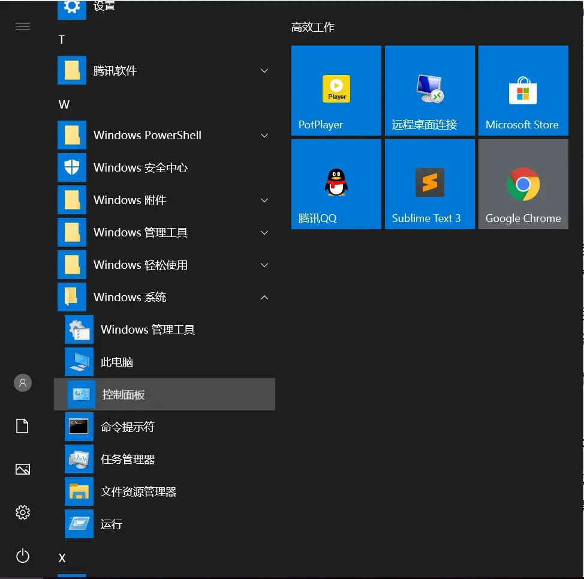
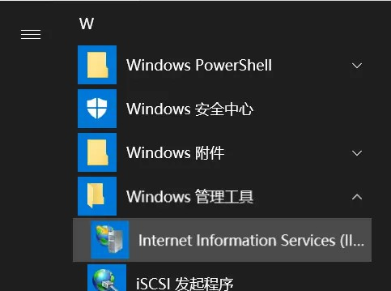
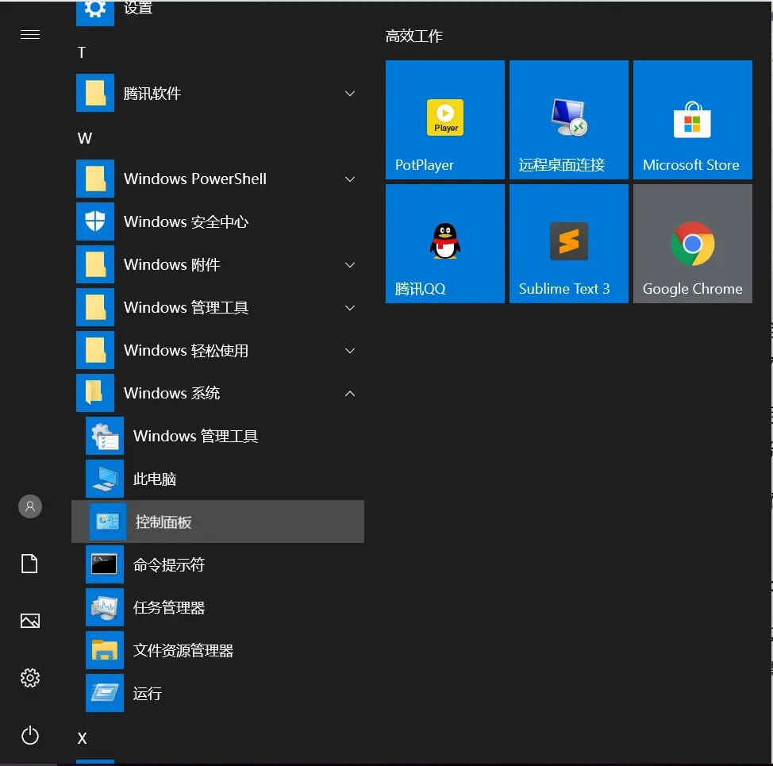
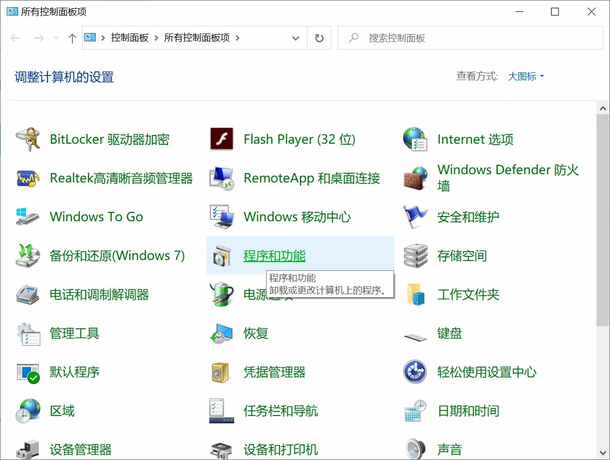
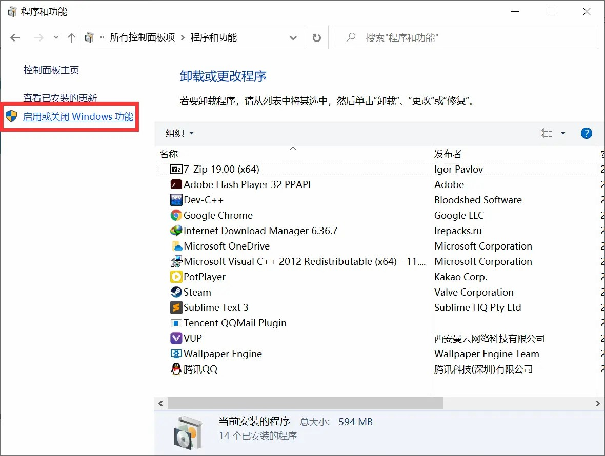
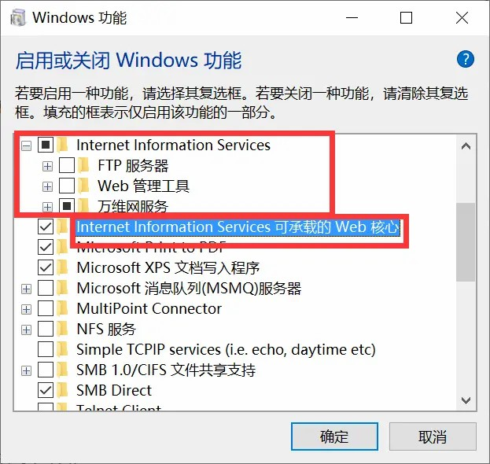
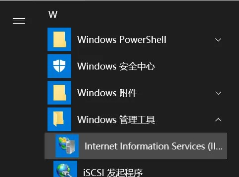
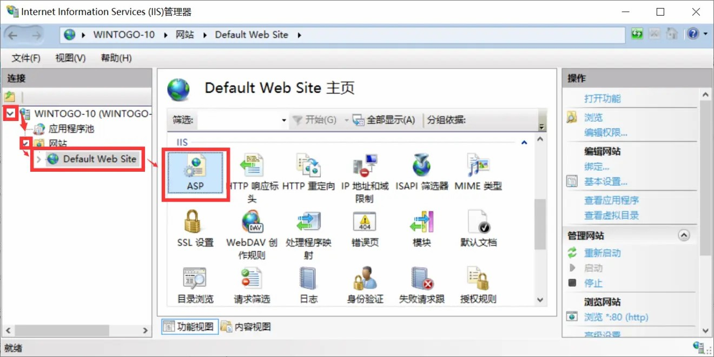
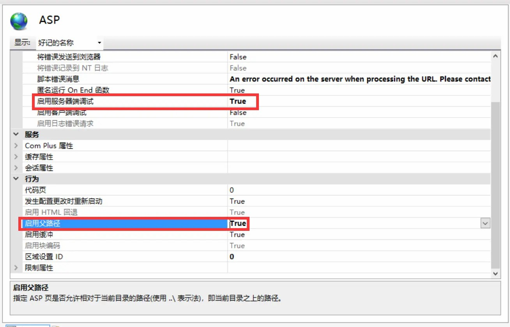

怎么自己简单地搭建一个的博客
How To Build A Blog In Some Simple Way
2020/4/10 11:58 分类:随手转发
How To Build A Blog In Some Simple Way
2020/4/10 11:58 分类:随手转发
我是一个个人博客搭建者，自己搭了一个平时没什么人去的小网站。
如果是匿名用户，我是不太推荐用国内提供商的，国内提供商5Mbps就得几千，而且如果不备案，只能IP访问，就算挂第三方的域名也没用，我是穷学生真的用不起，我妈也不给我身份证。所以这边建议Vultr，2.5$挡，至于如何开的这种问题可以上百度搜，这边有一个链接: 链接地址
虽然10GB的磁盘看起来不太够用，但是如果不是把网站做成NAS或者其他的下载网站一般都是够用的。（我放了一个MC服务器，加了几十个插件，都没啥事，9.5GB左右）
开服务器是很简单的，重要的不在服务器而在于内容，我搭建博客是找乐子，顺便学习HTML和ASP。
前面水了这么多，那就正式讲了：
**这边讲的是自己搭建（总不会买一个服务器也不会吧），基于Windows10，Windows Server系列可能会有所不同，针对中国电信/联通宽带用户，移动就不用想了，没公网IP，你还得用内网穿透或者上专线。

记得IIS管理工具除了IIS6兼容性其他都得钩，不然配置动态页面很麻烦。
完成之后点击确定。
在功能配置完全之后，你访问127.0.0.1或者localhost都可以访问到这样一个页面：

其实基本到这里就结束了，静态页面也没什么问题了，不过如果要用动态页面（若无特殊说明，以下均指ASP页面）的话（比如意见反馈等等）还要配置一下。
**值得注意的是：如果需要动态页面支持，则需要在配置功能的页面勾选 “开发工具” 复选框。

**值得注意的是，有时候访问ASP页面会出现503/403错误，这个时候应该是权限错误。我们需要给Everyone赋予读取权限。
写在最后：可能会有人问我，为什么不用PhP和PhP Study，因为我真的好像看不懂PhP的一堆问号，而且也懒[手动狗头]。 而PhP Study好像不支持ASP（怎么可能支持嘛），如果你是PhP大佬，你大可以选择其他的，我只是一个建站半年的新手。
如果是匿名用户，我是不太推荐用国内提供商的，国内提供商5Mbps就得几千，而且如果不备案，只能IP访问，就算挂第三方的域名也没用，我是穷学生真的用不起，我妈也不给我身份证。所以这边建议Vultr，2.5$挡，至于如何开的这种问题可以上百度搜，这边有一个链接: 链接地址
虽然10GB的磁盘看起来不太够用，但是如果不是把网站做成NAS或者其他的下载网站一般都是够用的。（我放了一个MC服务器，加了几十个插件，都没啥事，9.5GB左右）
开服务器是很简单的，重要的不在服务器而在于内容，我搭建博客是找乐子，顺便学习HTML和ASP。
前面水了这么多，那就正式讲了：
**这边讲的是自己搭建（总不会买一个服务器也不会吧），基于Windows10，Windows Server系列可能会有所不同，针对中国电信/联通宽带用户，移动就不用想了，没公网IP，你还得用内网穿透或者上专线。

1.打开控制面板
2.进入程序和功能
3.进入启动和关闭Windows功能
4.Web核心必须勾选，Internet Information Service内的项目可以看需求勾选
记得IIS管理工具除了IIS6兼容性其他都得钩，不然配置动态页面很麻烦。
完成之后点击确定。
在功能配置完全之后，你访问127.0.0.1或者localhost都可以访问到这样一个页面：
默认页面
这时候你来到C:\inetpub\wwwroot会有几个文件，这些是默认页面，都可以删除，然后放自己的页面进去。其实基本到这里就结束了，静态页面也没什么问题了，不过如果要用动态页面（若无特殊说明，以下均指ASP页面）的话（比如意见反馈等等）还要配置一下。
**值得注意的是：如果需要动态页面支持，则需要在配置功能的页面勾选 “开发工具” 复选框。

打开IIS管理控制台
依次进入"IIS"选项卡
在IIS选项卡内，将几个被框住的部分改为True，点击右侧的"应用"
**值得注意的是，有时候访问ASP页面会出现503/403错误，这个时候应该是权限错误。我们需要给Everyone赋予读取权限。
写在最后：可能会有人问我，为什么不用PhP和PhP Study，因为我真的好像看不懂PhP的一堆问号，而且也懒[手动狗头]。 而PhP Study好像不支持ASP（怎么可能支持嘛），如果你是PhP大佬，你大可以选择其他的，我只是一个建站半年的新手。